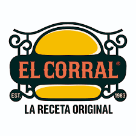
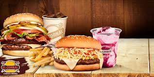

EL CORRAL
El Corral es una cadena colombiana de restaurantes reconocida por sus hamburguesas artesanales. Fundada en 1983, se ha expandido por todo el país, incluyendo varias sedes en Medellín. Ofrece opciones como la Corralísima y la Vaquero Especial, además de papas, malteadas y alternativas vegetarianas. Aunque muchos valoran su sabor, algunos clientes opinan que sus precios son altos y la calidad ha bajado con el tiempo.
Rutas relativas
 Rutas absolutas